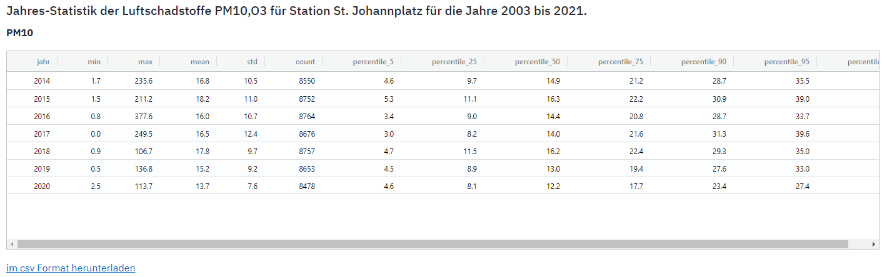
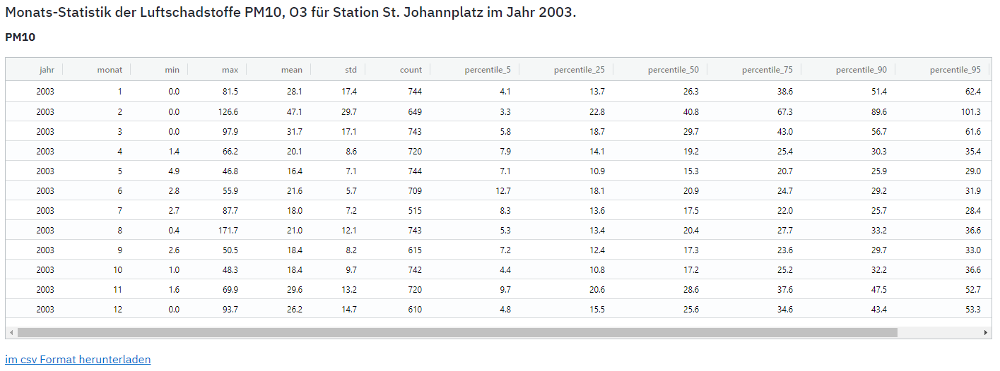
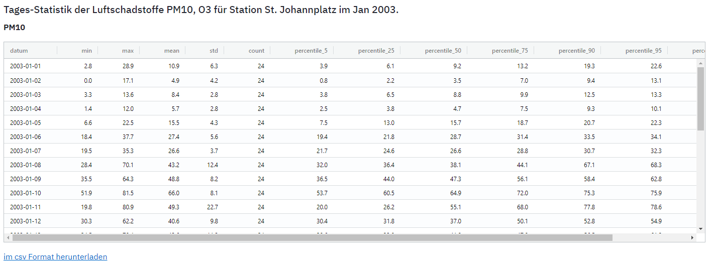

Statistiken
Statistik erlaubt einen Überblick über einen Datenbestand, ähnlich wie es eine Zusammenfassung für ein Buch tut. In der Navigationsleiste wird die Station ausgewählt (Aktuell nur eine verfügbar), die gewünschten Parameter, sowie die Zeitdauer, welche die Statistik enthalten soll. Zudem kann die zeitliche Auflösung geändert werden.
Statistik
- nach Jahr: ergibt eine Zeile pro Jahr 
- nach Monat: ergibt eine Zeile pro Monat, es wird ein einzelnes Jahr ausgewählt. Diese Statistik eignet sich für die Analyse von langfristigen Trends. 
- nach Tag: ergibt eine Zeile pro Tag, es wird ein Jahr und Monat ansgewählt. 
Statistik-Tabelle
- Extremwerte: min und max sind die im gewählten Zeitintervall aufgetretene kleinste und grösste Werte.
- Mittelwert:
- Standardabweichung
- Perzentile: Es werden die üblichsten Perzentile (5%, 25%, 50%, 75%, 90%, 95%) ausgegeben. Ein 25% Perzentil Wert von 8.8 für das Jahr 2008 bedeutet zum Beispiel, dass 25% der Werte in den beobachteten Werten kleiner und 75% grösser waren. %5 und 95% Perzentile zeigen den Bereich an, wo Extrem-Werte (besonders tiefe oder hohe Werte auch Outlier genannt) auftreten. 25% und 75% Perzentile zeigen den Bereich an, in den der Grossteil der Werte fallen (50% der Werte innerhalb dieser beiden Perzentile) und das 50% Perzentil wird auch als Median bezeichnet und zeigt den Wert bei welchems die Hälfte aller Werte kleiner und die Hälfte aller WErte grösser ist. Im Gegensatz zum Mittelwert, ist der Median robuster gegeben Extremwerte. Eine deutliche Differenz zwischen Mittelwert und Median deutet darauf hin, dass die werte nicht normal verteilt sind.
Die Statistiken werden automatisch neu berechnet nach jeder Änderung und als Tabellen im Ausgabebereich angezeigt.